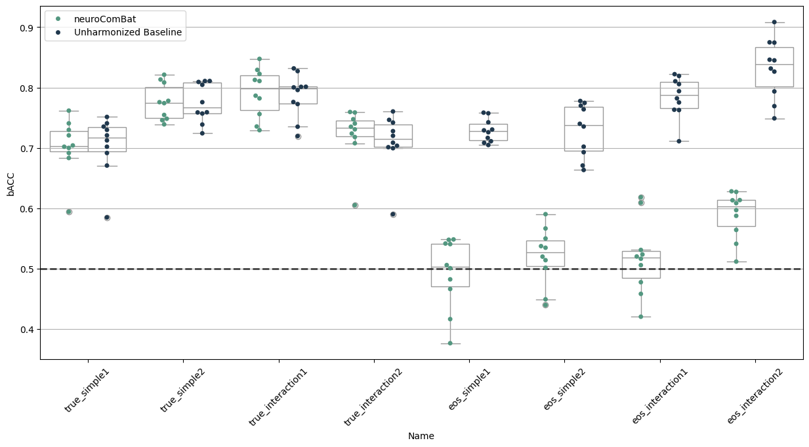

Notebook Explanation¶
1) Setup and imports¶
- Imported plotting (
matplotlib,seaborn) and data tools (pandas). - Imported machine learning models (
LogisticRegression,RandomForestClassifier) and metric (balanced_accuracy_score). - Imported harmonization tools from
uniharmony(NeuroComBat,load_MAREoS). - Set logging/warnings to keep output cleaner.
import logging
import warnings
import matplotlib.pyplot as plt
import pandas as pd
import seaborn as sbn
import structlog
from sklearn.ensemble import RandomForestClassifier
from sklearn.exceptions import ConvergenceWarning
from sklearn.linear_model import LogisticRegression
from sklearn.metrics import balanced_accuracy_score
from uniharmony.combat import NeuroComBat
from uniharmony.datasets import load_MAREoS
structlog.configure(wrapper_class=structlog.make_filtering_bound_logger(logging.ERROR))
warnings.filterwarnings(action="ignore", category=ConvergenceWarning)
2) Load MAREoS benchmark dataset¶
datasets = load_MAREoS()loads simulated neuroimaging benchmark data.- The dataset contains multiple scenarios (
truevseoseffects;simplevsinteraction; example 1/2).
# Load the MAREoS dataset (made for benchmarking harmonization methods)
datasets = load_MAREoS()
# Define the different effects, effect types, and examples to iterate over
effects = ["true", "eos"]
effect_types = ["simple", "interaction"]
effect_examples = ["1", "2"]
random_state = 23
# Asigne an empty list to each key in the results dictionary
unharmonized_results = []
neurocombat_results = []
# Define the harmonization model to use (NeuroComBat in this case)
harm_model = NeuroComBat()
3) Experiment loop¶
- Iterates all combinations:
effect=trueoreoseffect_type=simpleorinteractionexample=1or2
- For each combination:
- Choose classifier: logistic regression for simple; random forest for interaction.
- Extract data:
X,y,sites,folds. - Do leave-one-fold-out cross-validation:
- train on folds != current fold
- test on fold == current fold
- Train baseline classifier on unharmonized training data and compute balanced accuracy on raw test.
- Harmonize training with
NeuroComBat.fit_transform(...), then train classifier, transform test, compute balanced accuracy.
- Collect results into two lists and then into DataFrames.
for effect in effects:
for e_types in effect_types:
if e_types == "interaction":
clf = RandomForestClassifier(random_state=random_state)
elif e_types == "simple":
clf = LogisticRegression(random_state=random_state)
for e_example in effect_examples:
example = effect + "_" + e_types + e_example
print("Experiment name: " + example)
data = datasets[example]
sites = data["sites"]
X = data["X"]
folds = data["folds"]
folds = pd.Series(folds)
sites = data["sites"]
target = data["y"]
covars = target.ravel().reshape(-1, 1)
for fold in folds.unique():
print("Fold Number: " + str(fold))
# Train Data
X = data["X"].copy()
y = data["y"].copy()
sites = data["sites"].copy()
# Train Target
X_train = X[data["folds"] != fold]
site_train = sites[data["folds"] != fold]
y_train = y[data["folds"] != fold]
# Test data
X_test = X[data["folds"] == fold]
site_test = sites[data["folds"] == fold]
# Test target
y_test = y[data["folds"] == fold]
# Unharmonized baseline model
clf.fit(X_train, y_train)
unharmonized_results.append(
[
balanced_accuracy_score(y_true=y_test, y_pred=clf.predict(X=X_test)),
fold,
effect,
e_types,
e_example,
example,
]
)
# neuroComBat (do not include target as covariate - avoiding data leakage)
X_train_harm = harm_model.fit_transform(X=X_train, sites=site_train)
# Fit the model with the harmonized train
clf.fit(X_train_harm, y_train)
# harmonize the test data
X_test_harm = harm_model.transform(X=X_test, sites=site_test)
neurocombat_results.append(
[
balanced_accuracy_score(y_true=y_test, y_pred=clf.predict(X=X_test_harm)),
fold,
effect,
e_types,
e_example,
example,
]
)
Experiment name: true_simple1
Fold Number: 10
Fold Number: 4
Fold Number: 2
Fold Number: 6
Fold Number: 1
Fold Number: 9
Fold Number: 3
Fold Number: 7
Fold Number: 5
Fold Number: 8
Experiment name: true_simple2
Fold Number: 10
Fold Number: 4
Fold Number: 2
Fold Number: 6
Fold Number: 1
Fold Number: 9
Fold Number: 3
Fold Number: 7
Fold Number: 5
Fold Number: 8
Experiment name: true_interaction1
Fold Number: 5
Fold Number: 10
Fold Number: 2
Fold Number: 8
Fold Number: 9
Fold Number: 7
Fold Number: 6
Fold Number: 4
Fold Number: 3
Fold Number: 1
Experiment name: true_interaction2
Fold Number: 5
Fold Number: 10
Fold Number: 2
Fold Number: 8
Fold Number: 9
Fold Number: 7
Fold Number: 6
Fold Number: 4
Fold Number: 3
Fold Number: 1
Experiment name: eos_simple1
Fold Number: 10
Fold Number: 4
Fold Number: 2
Fold Number: 6
Fold Number: 1
Fold Number: 9
Fold Number: 3
Fold Number: 7
Fold Number: 5
Fold Number: 8
Experiment name: eos_simple2
Fold Number: 10
Fold Number: 4
Fold Number: 2
Fold Number: 6
Fold Number: 1
Fold Number: 9
Fold Number: 3
Fold Number: 7
Fold Number: 5
Fold Number: 8
Experiment name: eos_interaction1
Fold Number: 5
Fold Number: 10
Fold Number: 2
Fold Number: 8
Fold Number: 9
Fold Number: 7
Fold Number: 6
Fold Number: 4
Fold Number: 3
Fold Number: 1
Experiment name: eos_interaction2
Fold Number: 5
Fold Number: 10
Fold Number: 2
Fold Number: 8
Fold Number: 9
Fold Number: 7
Fold Number: 6
Fold Number: 4
Fold Number: 3
Fold Number: 1
4) Compute and combine results¶
- Convert baseline and harmonized scores into DataFrames with columns:
bACC,Fold,Effect,Type,Example,Name,Method
- Combine with
pd.concat()intoresults.
# Results to datadframe
unharmonized_results = pd.DataFrame(data=unharmonized_results, columns=["bACC", "Fold", "Effect", "Type", "Example", "Name"])
unharmonized_results["Method"] = "Unharmonized Baseline"
neurocombat_results = pd.DataFrame(data=neurocombat_results, columns=["bACC", "Fold", "Effect", "Type", "Example", "Name"])
neurocombat_results["Method"] = "neuroComBat"
results = pd.concat([unharmonized_results, neurocombat_results])
5) Plot results¶
- Create swarm + box plot (for each experiment name) comparing:
Unharmonized BaselineneuroComBat
- Add chance-level horizontal line at
0.5. - Show how harmonization affects classification performance across scenarios.
# %% Plotting resuts
fig, ax = plt.subplots(1, 1, figsize=[15, 7])
harm_methods = [
"neuroComBat",
"Unharmonized Baseline",
]
pal = sbn.cubehelix_palette(len(harm_methods), rot=-0.5, light=0.5, dark=0.2)
sbn.swarmplot(data=results, x="Name", y="bACC", hue="Method", hue_order=harm_methods, dodge=True, ax=ax, palette=pal)
sbn.boxplot(
data=results,
color="w",
zorder=1,
x="Name",
y="bACC",
hue="Method",
hue_order=harm_methods,
dodge=True,
ax=ax,
palette=["w"] * len(harm_methods),
)
handles, labels = ax.get_legend_handles_labels()
ax.legend(handles[: len(harm_methods)], labels[: len(harm_methods)])
ax.axhline(0.5, lw=2, color="k", ls="--", alpha=0.7, label="Chance level")
plt.xticks(rotation=45)
plt.grid(axis="y")
plt.show()
# %%

6) Take-home message¶
- The final markdown note states:
neuroComBatremoves theeossite effect while preserving thetruesignal.
- The plot and results demonstrate the method’s ability to reduce spurious site-related variation and maintain true biological effect performance.